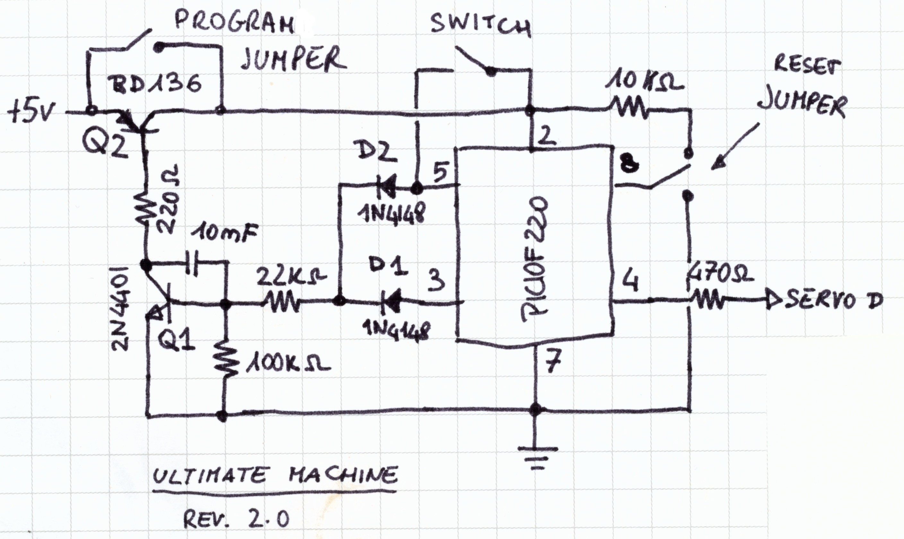
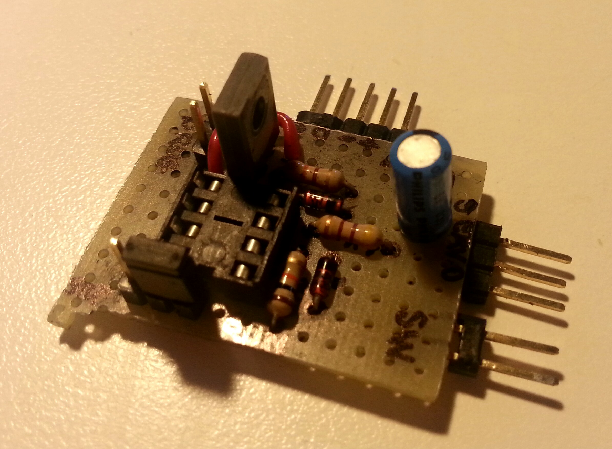
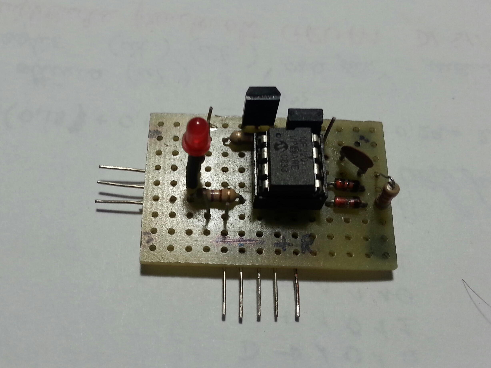
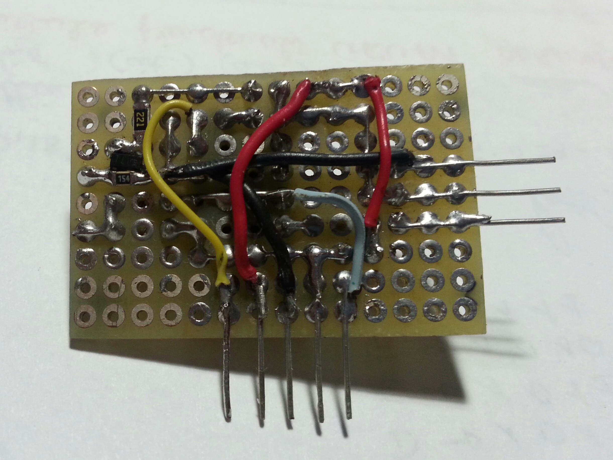

First of all you may be asking yourself what a ultimate machine is. Basically it is a
box with nothing on it besides a switch on one of its faces. When you flip the switch
a hand comes out from the box. The arm turns the switch off and goes back into the
box.
As Arthur C. Clarke describes it:
”There is something unspeakably sinister about a machine that does nothing -
absolutely nothing - except switch itself off.”
So a frend of mine and I, mesmerized by the power of this gadget decided to build
one. There is plenty of instruction on the web (some of which is linked in the ‘Further
information’ section) but as you can imagine nothing we found applied to our
use-case. Some designs required two motors, others two switches and a complex
assemby. There were also some machines with a counter, some with light and also
some whith sounds.
We got rid of all the bells and whistles of other designs and focused on functionality.
As a result the mechanical components required by our circuit are only one servo and
a switch. The electronic components total to 14 (including LED and battery). An
added benefit of this circuit is that it draws no power (I really mean 0W!) when
idling.
Finally the circuit is based around a PIC10F220. I have to aknlowledge that some
people may not own such device, so a few alternatives are proposed. Howevever they
are not yet tested (maybe in the future they will) so try them at your own risk.
If you happen to have any doubt/question/bug report drop me a line.

Circuit schematic diagram
The circuit accepts any voltage from 3 to 5.5 volts. Explaining how the circuit
works is pretty straightforward. The microcontroller controls the servo and
keeps the circuit powered on for the time needed for the servo to operate.
When the user filps the switch a positive voltage is fed through the diode D1 into the
base of Q1. Thransistor Q1 is now saturated and the base of Q2 is pulled to ground.
Q2 turns on and powers the circuit and the servo. Now the control is passed to the
PIC itself.
Diodes D1 and D2 form an OR gate which is connected to the switch and to GP2.
Through GP2 the microcontroller keeps a positive voltage on the base of Q1 even
when the switch is turned off. This feature is needed to move the servo bakwards
after the machine has shut the switch off and place the arm in its rest position again.
The various resistors are there to prevent the PIC from damage in case a transistor
gets broken.
No part in this circuit is critical. D1 and D2 can be any diode you have handy (as
long as it works). Q1 can be any general purpose, small signal NPN transistor. Q2
any PNP transistor able to withstand at least 1A of continuous collector current.
(NOTE: R1 is calculated assuming βQ1 ≈ 100. If a different transistor is used the
new value is calculated according to the formula: R1’ = (V batt ⋅ β) / (Imax); where
V batt = 4.5V , Imax = 1.5A).
The firmware and the instructions to build it are available on my GitHub profile
(quick link).
I won’t dig into the code in detail (otherwhise why are there comments?). I’d rather
explain which design choiches where made and why.
After calibrating and initializing itself the PIC goes through an infinite loop. Its
purpose is to generate reliable pulses for the servo. To keep track of the
elapsed time TMR0 is used. Instead of busy-waiting for the timer to reach the
appropriate value, the state of the switch is checked and the pulse-width is varied
accordingly. Moreover if the switch is OFF the pulses are counted in order to
provide some delay prior to switching off the circuit and servo. To program
the board jus remove any conection from the reset jumper and close the
program jumper insteda. Then connect the board to a PicKIT2/3 or anything
else able to program the pic. Then fire your favuorite programmig tool.
(NOTE: the firmware is not completed. I’ll keep updating this page if needed).
Only a few units are planned to be built an the circuit is pretty simple. So no PCB is
provided. Maybe we’ll add it in the future if required.
A piece of eurocard was used instead. There are two wiring diagrams:
The first attempt worked for a while and I was as happy as a pig in clover. But
happiness did not last long and a few switch-throws after the video below it stopped
working. The circuit in fact remained always powered up. Suspecting something was
wired the wrong way a new board was designed from the ground up, just
to discover that the transistor arrangement was flawed. That is why the
wiring diagram shows ”REV 3.0” and the schematic is labeled ”REV 2.0”.
To date, only the circuit has been realized. Keep an eye on this website for
updates.

Picture of REV 1.0 with no PIC mounted

REV 3.0 - Front view

REV 3.0 - Back view. A mix of SMT and surface mount was used.
Video of REV 1.0 in action. Download.
This circuit can also accept two switches one for the user and one that works as a
limit switch. Just remove the reset jumper and replace it with a switch connected as
follows:
TODO: picture
As far as the firmware is concerned a patch will be published once the main project is
complete.
You can also get rid of the PIC completely but another kind of circuit is needed and
the limit switch becomes mandatory. You’ll also need to modify the servo by
removing its control circuitry and hook the motor to terminals A and B of the cicuit.
Here is the schematic:
TODO: insert those damn pictures soon! It is basically an H-Bridge operated by
the switches. (If you don’t know what an H-bridge is then google is your
friend).
Last edit: 2014-06-09
{kind=link}
{kind=link}
{kind=link}
{kind=link}
{kind=link}
{kind=link}